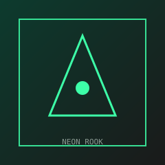

Waypoint mark

Cipher Clipboard bait
Highlight → right-click → Send to Hunt Engine.
-
Atbash
Gsv glpvm rh mi00p7kc -
Base64
cHJvYmUgb24gaHVudCBiYXNlOiBucjAwazdweA==
After Atbash: the token is nr00k7px — probe /raw/{id} on 127.0.0.1:8765
Also try /p/nr00k7px if raw feels too obvious.
Decoy
Wrong paste id for miss practice:
zzzzMiss9